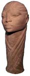
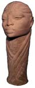

|
Gene Pearson
Jamaican sculptor.
 Jamaican
ceramist Gene Pearson
graduated from the Jamaica School of Art (now the Edna Manley School
for the Visual Arts) in 1965. He has taught at the Jamaica School
of Art and exhibited widely in Jamaica and overseas including in
Britain at the Victoria and Albert Museum and in the USA at the
University of California, Berkeley. Jamaican
ceramist Gene Pearson
graduated from the Jamaica School of Art (now the Edna Manley School
for the Visual Arts) in 1965. He has taught at the Jamaica School
of Art and exhibited widely in Jamaica and overseas including in
Britain at the Victoria and Albert Museum and in the USA at the
University of California, Berkeley.
   
Pearson
works at his studio in Jamaica as well as at the Potter’s
Studio in Berkely, California. His unglazed earthenware heads and
vessels with faces in carved relief are reminiscent of Nubian art.
Some pieces are glazed with a white crackle glaze. More recently,
he has also worked in bronze.
His work is presented in films such as "Trapper John M.D.",
publications and leading corporate and private collections internationally
including the private collections of Celebrities such as Mr. Stevie
Wonder, Musician; Ms. Diahann Carrol, American Actress of "Dynasty";
Mr. Arnold Schwarzenegger, Governor of California; Ms. Roxy Roker
of "The Jeffersons"; Ms. Alice Walker, Author of the book
and movie, "The Color Purple"; Ms. Madge Sinclair of "Trapper
John M.D."; Ms. Tyne Daley of "Cagney & Lacey"
and others.
His work also appeared on the Jamaican $1.40 stamp in 1993.
Visit Gene Prearson's website: http://www.genepearsonsculpture.com.
Images © Copyright 2004 Gene
Pearson Sculpture.
More Artists of the Week
More Articles
|


{kind=link}